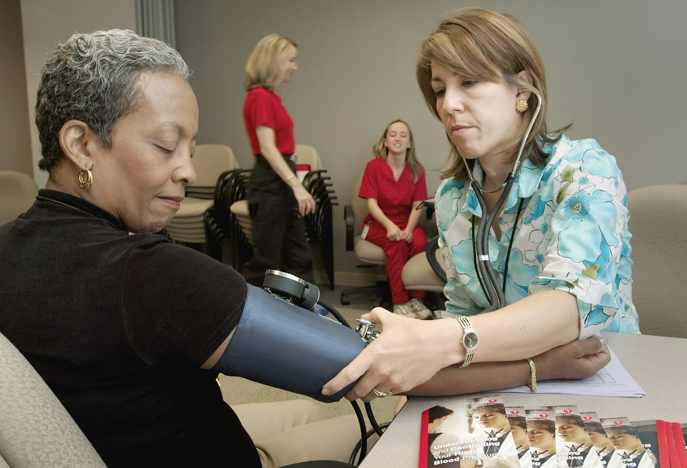
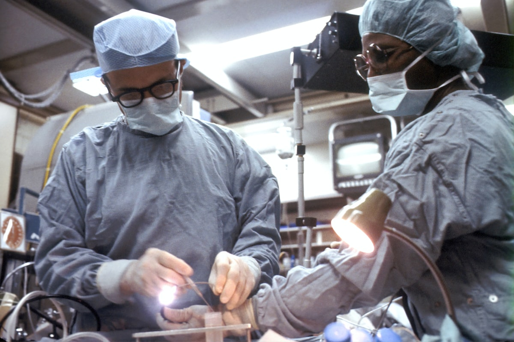
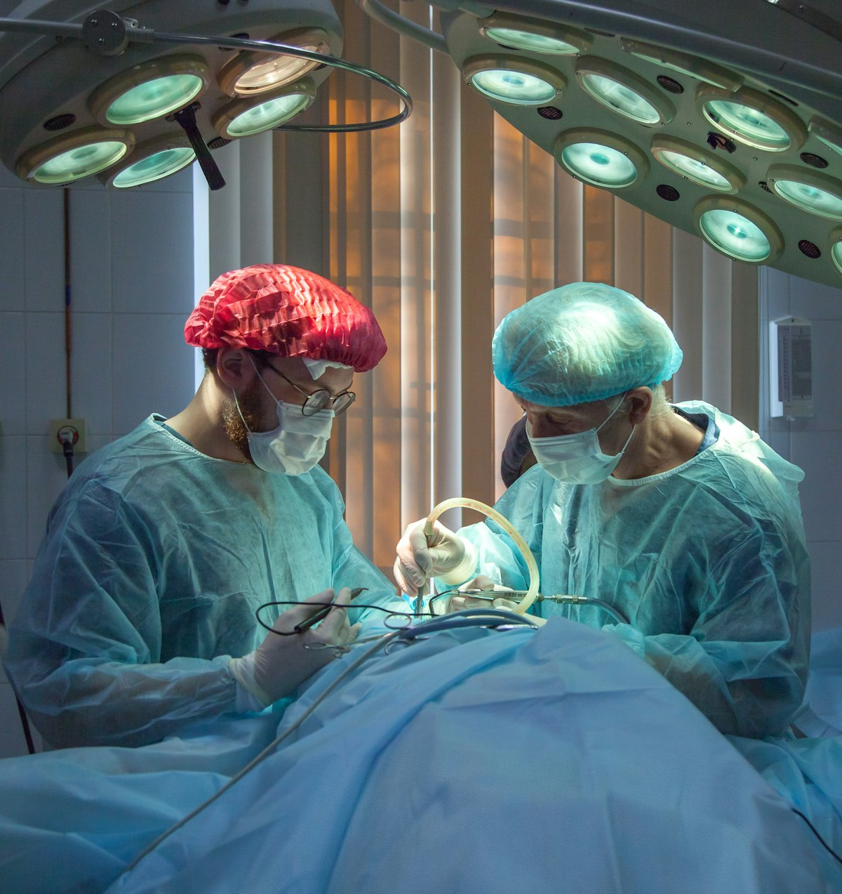

/01
/01
Cardiología
EKGDiagnóstico y tratamiento de enfermedades del corazón y sistema cardiovascular. Incluye electrocardiograma.
45 min · S/ 120
Agendar
Agenda una consulta con cualquiera de nuestras 15 especialidades en menos de 90 segundos. Convenios con EsSalud y SIS. Resultados de laboratorio en el día.

Selecciona una especialidad para conocer médicos, duración promedio y agendar.
/01
Diagnóstico y tratamiento de enfermedades del corazón y sistema cardiovascular. Incluye electrocardiograma.

/02Atención especializada para niños y adolescentes con control de crecimiento y vacunación.
 /03
/03
Tratamiento de lesiones y enfermedades del aparato locomotor. Evaluación musculoesquelética completa.
 /04
/04
Diagnóstico de enfermedades del sistema nervioso central y periférico, cefaleas y trastornos del sueño.

/05Examen visual completo, fondo de ojo y evaluación de presión intraocular para detección de glaucoma.
 /06
/06
Estudios de imagen diagnóstica: rayos X, ecografías y tomografías con informe en el día.
Procesos pensados para que entres, te atiendan y salgas con un resultado claro.
Reservás en línea, llegás a la hora exacta de tu cita y recibís los resultados sin volver. Los procesos administrativos no son tu problema — son el nuestro.
Cifras del periodo enero–diciembre 2025.
Consultas presenciales completadas durante 2025.
Especialistas con CMP vigente y experiencia clínica.
Áreas clínicas operativas, incluyendo imagenología.
Operando en San Isidro desde el año 2015.
El formulario toma menos de 90 segundos. Te confirmamos por correo en 2 horas hábiles.